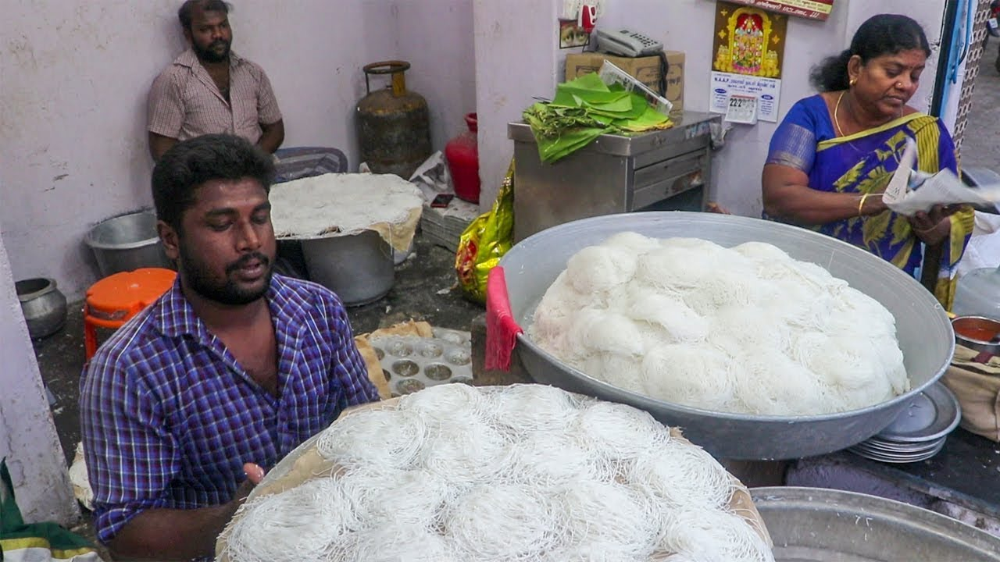
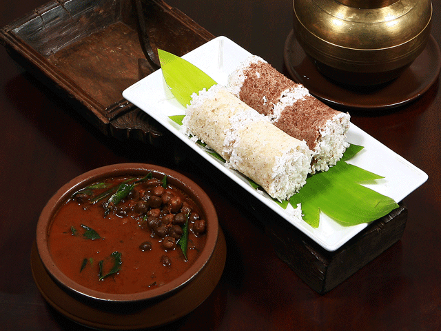
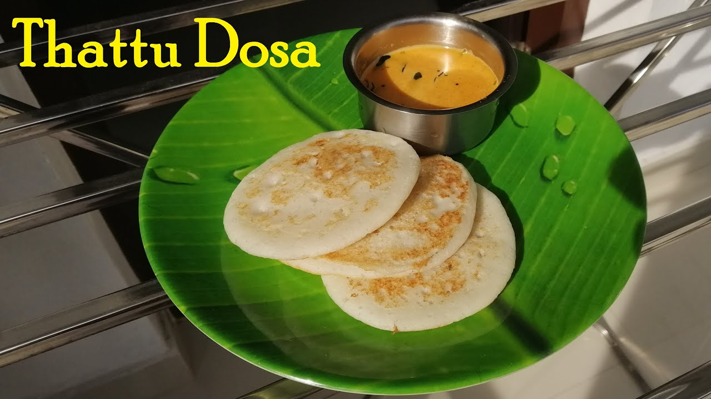
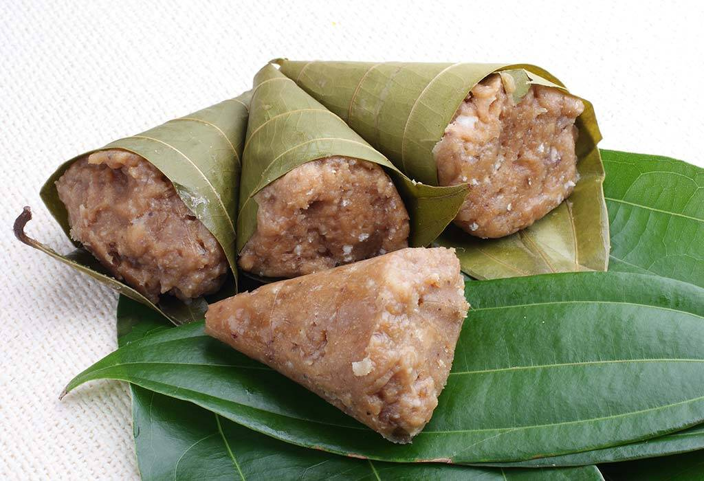
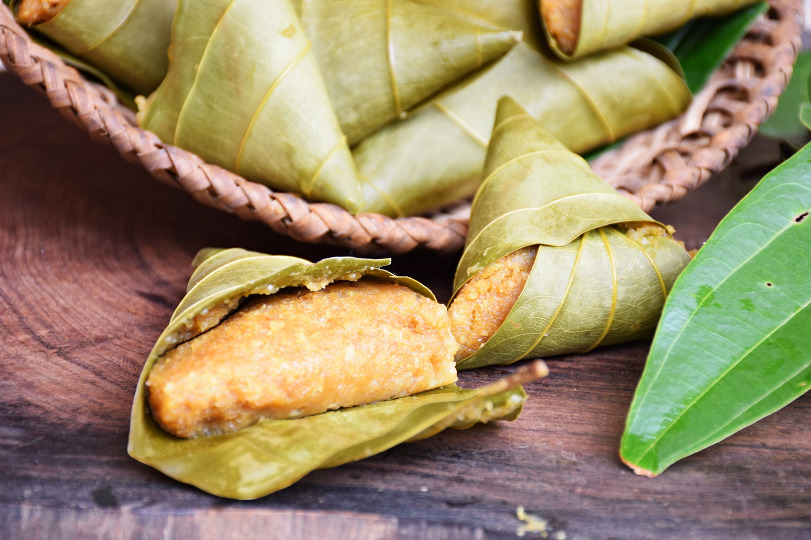
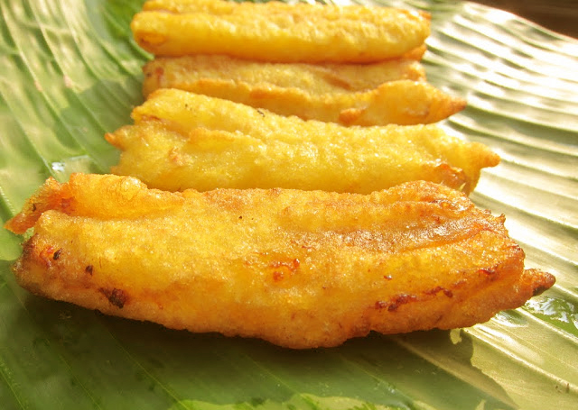
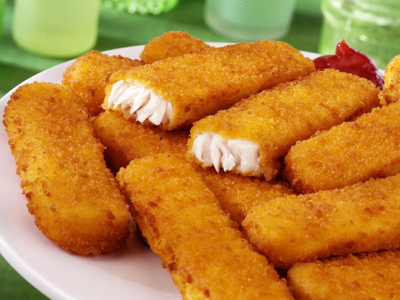
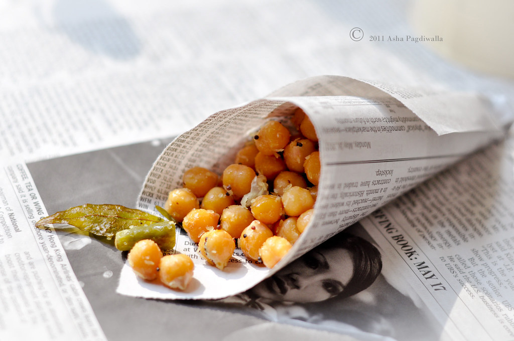
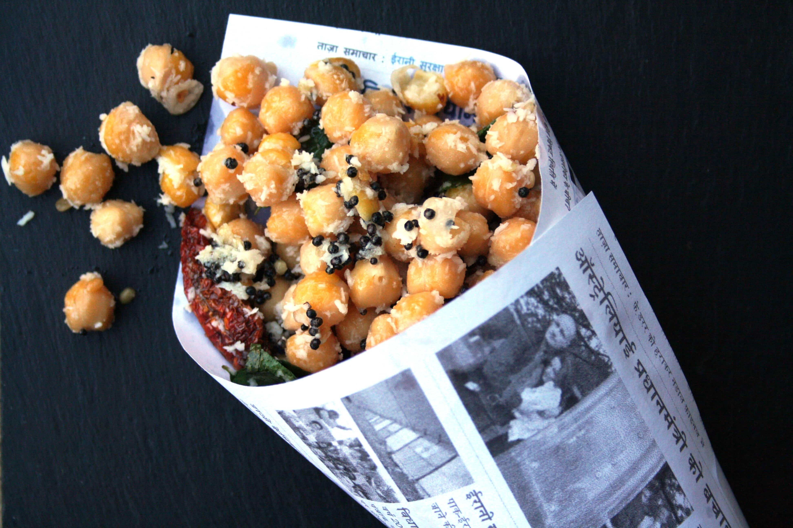

IDYAPPAM


Strands of Vermicelli cooked in the shape of Idlis - Idyappam is one of the most popular foods of Kerala that’s eaten both as breakfast, a snack as well as the main food at times. It is made of rice flour and is usually eaten with curries, mostly with chana curry or with egg curry both of which are a favourite with the locals. Along with most of the restaurants, street food stalls in Kerala have Idyappam or Noolappam (as they are sometimes called) as a major food.
PUTTU


Yet another breakfast favourite with the locals, Puttu is one food that is found everywhere in Kerala. It is basically a rice roll with coconut filling, usually eaten with Kadala curry which is made with chickpeas. While it’s usually had for breakfast, you can find them althrough the day especially on the many street stalls.
MALABAR PAROTTA


The Kerala version of the parotta – the Malabar Parotta is a thick and fluffy kind of flatbread that’s made of all-purpose flour. Most of the time, the Malabar Parotta has got egg stuffed within it. This soft and delectable version of the naan is one of more of Kerala’s street food that the locals relish and we find it in most of the street food stalls as well as in most other eateries of the state.
THATTU DOSA


A small steamed dosa – which happens to be Kerala’s own creation is one of the most popular street foods here. In fact, the very name of the dosa means that it is found on the small street stalls. This one’s a healthy version of dosa being steamed and is usually had with coconut chutney or sometimes even one of the many curries of the land.
APPAM


A kind of a rice-pancake which is thin and crispy, Appam is one food that every one visiting here must sample. Despite the simplicity of the Appam, it is quite delectable. It is usually had with stew and a host of curries most of which have a lot of coconuty flavor to them.
Kumbilappam


Did you know that you could make dumplings with Jackfruit? That is what Kumbilappam is for you and it has been one of the most popular dishes of Kerala which has made its way onto street food as well. While many households usually make it during the time of Onam, you can find it through-out the year on the many street stalls here. The dumplings are wrapped in the leaves of elamangalam – an aromatic plant with cinnamon like aroma. This is surely one authentic Kerala dish that you shouldn’t miss out on while you’re here.
PAZHAMPORI


Right from their homes to the food stalls on the street, the banana fritters are an old-time favourite snack with the Keralaites and understandably so – they’re crispy, yummy and you can’t just eat one! Ripe bananas are dipped in flour and fried and that’s all it takes to make this snack. In most of the cities, hill stations and towns of Kerala, this snack is one that you’ll find everywhere.
FISH FINGERS


The many fish-based foods found in Kerala are quite popular and rule the streets too. Apart from all the curries made of fish and the fried fish, fish fingers are quite a hit with the locals these days in their stalls and food trucks. It is used as a snack most of the time and is made with fish, flour and flavours added to that. While fish fingers don’t solely belong to Kerala, there’s a special unique flavor to the ones we find here.
SUNDAL


Sundal is yet another popular snack that we find on the streets of not just Kerala but other states in South India such as Tamilnadu and Karnataka as well. Chickpeas stir fried with coconut and some other spices and wrapped in leaves or papers is what Sundal from the streets is for you. And while it tastes great, it makes for a highly proteinaceous snack too.